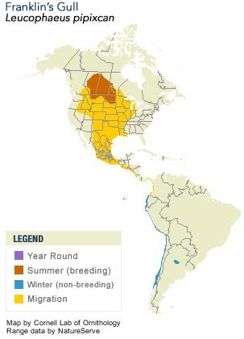

Neat facts
- The Franklin's Gull has two complete molts each year instead of just one.
- Their nests rot and sink below the water surface and so need to be maintained. Parents and older chicks add new material daily.
| Binomial Name | Leucophaeus pipixcan |
|---|---|
| Length | 32-36 cm |
| Wingspan | 85-95 cm |
| Weight | 220-335 g |
| Habitat | Marshes, inland lakes, coastal bays, estuaries, and sandy beaches |
| Food | Insects, earthworms, fish, mice, garbage, seeds |
| Nest Location | A floating platform of vegetation in thick reeds above water |
| Nest Size | Various sizes, in colonies 0.6-2.5 m apart |
| Egg Description | Greenish brown with dark splotches |
| Clutch Size | 1-4 eggs |

In the summer you can watch these gulls swoop down over the Bow River performing acrobatics. What they are really up to is anyone's guess.